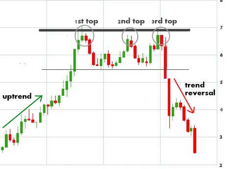

"ट्रिपल टॉप पैटर्न" एक पलटाव चार्ट पैटर्न है जो तीन समान चोटियाँ द्वारा चिह्नित होती है, जिन्हें एक समर्थन स्तर से जोड़ा जाता है।
तीसरी चोटी सामान्यतः पहले और दूसरे शीर्ष से कम होती है।
"ट्रिपल टॉप पैटर्न" एक संभावित गिरता हुआ त्रेंड दिखाता है और ट्रेडर्स आमतौर पर इसे व्यापार के अवसर के रूप में इस्तेमाल करते हैं।
पैटर्न में प्रवेश करने के लिए, ट्रेडर्स आमतौर पर तीसरी शीर्ष के नीचे 'ब्रेकआउट' की खोज करते हैं।
"ट्रिपल टॉप पैटर्न" एक विश्वसनीय रिवर्सल पैटर्न नहीं है, हालांकि यह एक संभावित गिरावट का संकेत देता है और ट्रेडर्स
आमतौर पर इसे व्यापार के अवसर के रूप में इस्तेमाल करते हैं।
